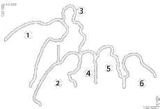

| |
 |
 |
| |
 |
| |
| 1
- H.Berthold |
4 - V.Reinhart |
| 2
- J.Babureck |
5 - I.Wagner |
| 3
- P.Volker |
6 - F.Wichman |
| |
|
|
 |
|
|
|
|
Le projet d'un institut de nationalité allemande, spécialisé
dans l'archéologie et la paléographie, est né à la fin
des années 50 alors que Peter Volker, éminent chercheur
à l'Université de Berlin, entamait sa thèse consacrée
à l'épigraphie grecque. Conscient de la dispersion de
la documentation, il entreprend de constituer un corpus
complet des inscriptions grecques qui reste une référence
aujourd'hui dans le milieu de la recherche.
L'idée d'une fondation pouvant concentrer dans un même
établissement laboratoire et documents, prend forme
officiellement en septembre 1965 sous le nom d'Institut
des Langues et de la Culture des Mondes Anciens. Dans
l'intention d'homogénéiser les optiques de recherche
et permettre une collaboration plus étroite entre les
archéologues et les paléographes, elle se structure
autour d'un laboratoire d'analyse et d'un équipement
important pour le traitement des manuscrits.
En 1976, la fondation est rebaptisée Institut Volker,
en hommage au professeur Volker disparu l'année précédente
en Grèce. Elle se réorganise en unités de recherche
et crée, à côté du laboratoire d'épigraphie, codicologie
et papyrologie, un centre d'études comparées des cultures
anciennes. Aujourd'hui l'établissement compte trois
unités placées sous la direction de spécialistes qui
offrent parallèlement un enseignement doctoral.
|
|
|